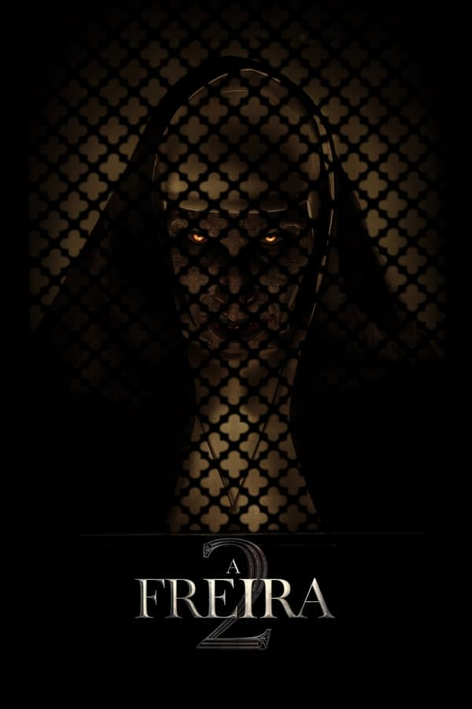
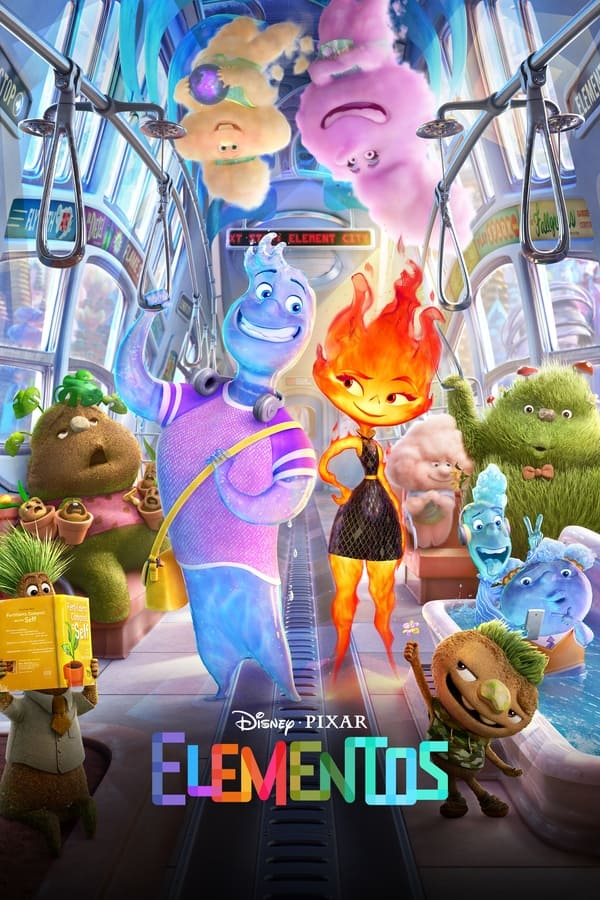
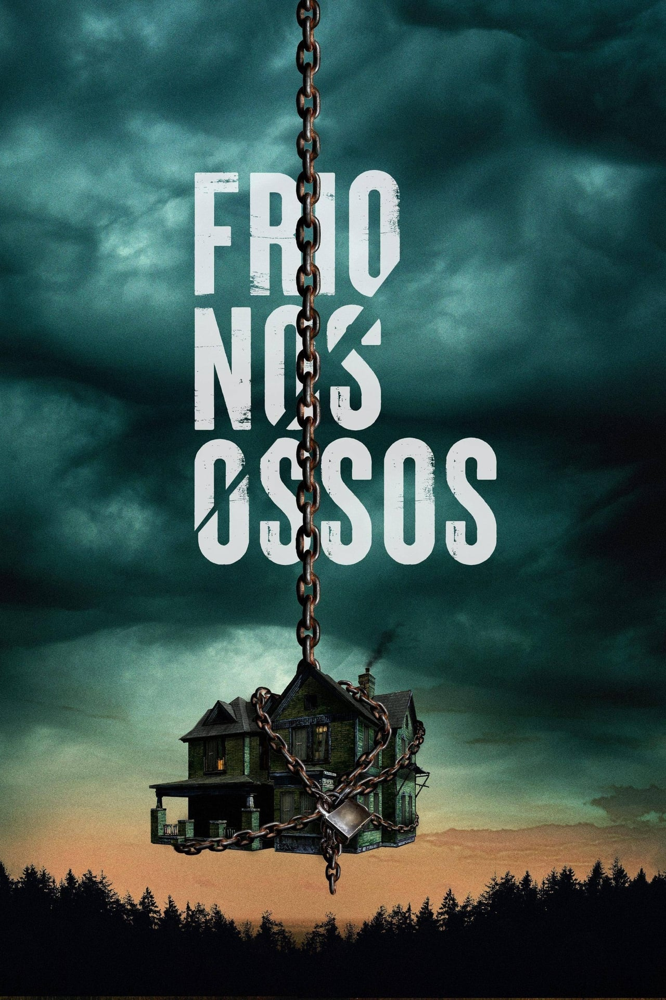

A Freira 2

Em 1956, na França, um padre é assassinado e parece que um mal está se espalhando. Determinada a deter o maligno, irmã Irene mais uma vez fica cara a cara com uma força demoníaca
Elementos

Em uma cidade onde os habitantes de fogo, água, terra e ar convivem, uma jovem mulher flamejante e um rapaz que vive seguindo o fluxo descobrem algo surpreendente, porém elementar: o quanto eles têm em comum
OppenheimerO físico J. Robert Oppenheimer trabalha com uma equipe de cientistas durante o Projeto Manhattan, levando ao desenvolvimento da bomba atômica.
Barbie
Depois de ser expulsa da Barbieland por ser uma boneca de aparência menos do que perfeita, Barbie parte para o mundo humano em busca da verdadeira felicidade.
Panico VI
Sam, Tara, Chad e Mindy, os quatro sobreviventes do massacre realizado pelo Ghostface, decidem deixar Woodsboro para trás em busca de um novo começo em Nova York. Mas não demora muito para eles se tornarem alvo de um novo serial killer.
Por do Sol
Pôr do Sol: O Mistério do Colar de São Cajó é um filme português de comédia, realizado por Manuel Pureza, tratando-se de uma prequela da série da RTP1 Pôr do Sol.Besouro AzulO adolescente Jaime Reyes ganha superpoderes quando um misterioso escaravelho se prende à sua coluna e lhe fornece uma poderosa armadura alienígena azul.
Shazam
Deuses antigos chegam à Terra em busca da magia roubada deles há muito tempo. Shazam e seus aliados são lançados em uma batalha por seus superpoderes, suas vidas e o destino do mundo.
Frio Nos Ossos

Uma mãe, seu marido deficiente e sua filha adolescente têm seu cotidiano perturbado quando dois criminosos em fuga tentam se refugiar em sua casa. No entanto, mal sabem eles dos segredos sombrios que aquela casa esconde.